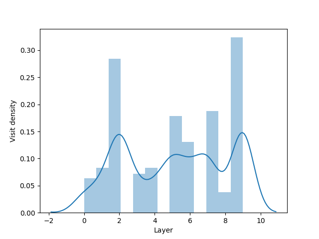

Analysis of multilayers
Having discussed how the multilayer networks can be constructed, the next logical step is to discuss what analytics is offered by py3plex. In this chapter, we discuss the following functionality:
Looping constructs and iteration (multilayer networks)
Traversal (multilayer networks).
Bindings to NetworkX for arbitrary monolayer functinality.
Some useful constructs
Analysis of multilayer networks can be often tricky, as these structures need to be first simplified to more algorithm-friendly inputs. We next discuss some functionality supported by py3plex that potentially facilitates such endeavours. The multinet object is the core class around everything more or less evolves.
1 from py3plex.core import multinet
2
3 ## a multilayer object
4 A = multinet.multi_layer_network().load_network("../datasets/multiedgelist.txt",input_type="multiedgelist",directed=False)
5
6 A.basic_stats()
7
8 ## this is nicer printing.
9 A.monitor("Edge looping:")
10
11 ## looping through edges:
12 for edge in A.get_edges(data = True):
13 print(edge)
14
15 A.monitor("Node looping:")
16
17 ## what about nodes?
18 for node in A.get_nodes(data = True):
19 print(node)
20
21 C1 = A.subnetwork(['1'],subset_by="layers")
22 A.monitor(list(C1.get_nodes()))
23
24 C2 = A.subnetwork(['1'],subset_by="node_names")
25 A.monitor(list(C2.get_nodes()))
26
27 C3 = A.subnetwork([('1','1'),('2','1')],subset_by="node_layer_names")
28 A.monitor(list(C3.get_nodes()))
Network traversal
One of the simplest examples that leads to understanding what one can do with a given multilayer entwork is the notion of network traversal. We next present an example where a multilayer network is first generated and next traversed, where the locations of the random walkers traversing across intra- as well as inter-layer edges are considered.
1 from py3plex.core import multinet
2 from py3plex.core import random_generators
3 import numpy as np
4 import queue
5 import matplotlib.pyplot as plt
6 import seaborn as sns
7
8 ## some random graph
9 ER_multilayer = random_generators.random_multilayer_ER(3000,10,0.05,directed=False)
10
11 ## seed node
12 all_nodes = list(ER_multilayer.get_nodes())
13 all_nodes_indexed = {x:en for en,x in enumerate(all_nodes)}
14
15 ## spread from a random node
16 random_init = np.random.randint(len(all_nodes))
17 random_node = all_nodes[random_init]
18 spread_vector = np.zeros(len(ER_multilayer.core_network))
19 Q = queue.Queue(maxsize=3000)
20 Q.put(random_node)
21
22 layer_visit_sequence = []
23 node_visit_sequence = []
24 iterations = 0
25 while True:
26 if not Q.empty():
27 candidate = Q.get()
28 iterations+=1
29 if iterations % 100 == 0:
30 print("Iterations: {}".format(iterations))
31 for neighbor in ER_multilayer.get_neighbors(candidate[0],candidate[1]):
32 idx = all_nodes_indexed[neighbor]
33 if spread_vector[idx] != 1:
34 layer_visit_sequence.append(candidate[1])
35 node_visit_sequence.append((neighbor,iterations))
36 Q.put(neighbor)
37 spread_vector[idx] = 1
38 else:
39 break
40
41 sns.distplot(layer_visit_sequence)
42 plt.xlabel("Layer")
43 plt.ylabel("Visit density")
44 plt.show()
{kind=link}

Extending functionality with networkX?
As, under the hood, most of the py3plex objects are some form of multigraphs, with some simplification, many ad hoc functionality is readily available! Assuming you still have the C1 network from the first example, simply call the monoplex_nx_wrapper method with corresponding function name:
1centralities = C1.monoplex_nx_wrapper("degree_centrality")
2A.monitor(centralities)
A technical note
If you have a network without layer information, however would like to start from there, the:
A.add_dummy_layers()
Will equip each node with a dummy layer (hence all nodes are in the same layer).